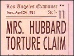

CHAPTER
TWO
The Dianetic Foundations
Charlatanism is almost impossible where
dianetics in any of its principles is being practiced.
- L. RON HUBBARD, Dianetics:
The Modern Science of Mental Health
By the end of 1950, five new Hubbard Dianetic Research
Foundations had been added to the first at Elizabeth. They were in Chicago, Honolulu, New
York, Washington and Los Angeles. The L.A. Foundation was headed by science fiction writer
A.E. van Vogt. That year, much of the letters section of Astounding Science Fiction
was devoted to Dianetics, where letters were answered by both Hubbard and Winter. Dianetics:
The Modern Science of Mental Health was on the bestseller lists for several months.
But despite the tremendous popularity of Dianetics, and the river of cash pouring into the
Foundations, there was trouble on the horizon.
The first signs came in August 1950, when Hubbard
exhibited a "Clear" [Ms. Sonia Bianca] at the Shrine Auditorium in Los Angeles.
Despite claims of "perfect recall," and the fact that she was majoring in
physics, the "Clear" was unable to remember a simple physics formula. When
Hubbard turned his back, she could not even remember the color of his tie.
 The Shrine Auditorium lecture has been
published by the Scientologists as part of Hubbard's immense collected works. The girl is
renamed "Ann Singer" in the Scientologists' version. The transcript has been
edited, but the question about the tie remains, as does one about physics, with a vague
answer. A Scientology account says Hubbard "spoke to a jammed house of over 6,000
enthusiastic people." According to author Martin Gardner, when "Ann Singer"
could not remember the color of Hubbard's tie, "a large part of the audience got up
and left." 1 The incident had a marked effect on Hubbard's credibility, and
he became cagey about declaring more Clears, avoiding public demonstrations of their
supposed abilities from then on. 2 The Shrine Auditorium lecture has been
published by the Scientologists as part of Hubbard's immense collected works. The girl is
renamed "Ann Singer" in the Scientologists' version. The transcript has been
edited, but the question about the tie remains, as does one about physics, with a vague
answer. A Scientology account says Hubbard "spoke to a jammed house of over 6,000
enthusiastic people." According to author Martin Gardner, when "Ann Singer"
could not remember the color of Hubbard's tie, "a large part of the audience got up
and left." 1 The incident had a marked effect on Hubbard's credibility, and
he became cagey about declaring more Clears, avoiding public demonstrations of their
supposed abilities from then on. 2
In September, The New York Times published a
statement by the American Psychological Association:
While suspending judgement concerning the
eventual validity of the claims made by the author of Dianetics, the association calls
attention to the fact that these claims are not supported by the empirical evidence of the
sort required for the establishment of scientific generalizations. In the public interest,
the association, in the absence of such evidence, recommends to its members that the use
of the techniques peculiar to Dianetics be limited to scientific investigations to test
the validity of its claims. 3
The following month, Dr. Joseph Winter and Arthur
Ceppos, the publisher of Dianetics, resigned from the Board of Directors of the
Hubbard Dianetic Research Foundation. Winter described his experiences in the first book
critical of Hubbard, A Doctor's Report on Dianetics. Winter felt Dianetics could
be dangerous in untrained hands, and asserted that repeated attempts to persuade Hubbard
to adopt a minimum standard to test student applicants had failed. Winter felt Dianetics
should be in the hands of people with some medical qualification. He had changed
his mind since writing the introduction to Dianetics a year before. He had also
begun to feel that "Clear" was unobtainable. In a year of close association with
Hubbard, Winter had not seen anyone who had achieved the state described in the book.
Winter also said he saw no scientific research being
performed at the "Research" Foundation. He was tired of Hubbard's disparagement
of the medical and psychiatric professions, and alarmed by Hubbard's use of massive doses
of a vitamin mixture called "Guk." Winter was even more alarmed by the auditing
of "past lives," which he considered entirely fanciful. Winter wrote,
"there was a difference between the ideals inherent within the dianetics hypothesis
and the actions of the Foundation .... The ideals of dianetics, as I saw them, included
nonauthoritarianism and a flexibility of approach .... The ideals of dianetics continued
to be given lip service, but I could see a definite disparity between ideals and
actualities." Winter set up a psychotherapeutic practice in Manhattan, and soon
drifted away from Dianetics.
In an article in Newsweek, entitled "The
Poor Man's Psychoanalysis," American Medical Association representative Dr. Morris
Fishbein labelled Dianetics a "mind-healing cult." Dianeticist Helen O'Brien has
said that one member of the Elizabeth Foundation resigned because in a month when $90,000
income was received, only $20,000 could be accounted for. A Board member of the time
denies this, but there are certainly questions about the disbursement of income. Later
events suggest that much of it went into Hubbard's pocket. One early associate says
Hubbard "spent money like water."
In November 1950, the Elizabeth Foundation set up a
Board of Ethics to ensure that practitioners were using the "Standard Procedure"
of Dianetic counselling approved by Hubbard. Innovators had been adding their own ideas to
Dianetics, which was anathema to Hubbard who called techniques he had not approved
"Black Dianetics," insisting they were dangerous. 4 This was in spite of his pronouncement in Dianetics
that "if anyone wants a monopoly on dianetics, be assured that he wants it for
reasons which have to do not with dianetics but with profit." 5 Hubbard obviously excluded himself from this pronouncement.
Hubbard moved to Palm Springs to work on his second
book, Science of Survival. He was living with a girlfriend, and drinking heavily.
He sniped at Foundation directors, trying to force their resignations. Distrust of his
associates and subordinates manifested itself repeatedly throughout his life. Hubbard's
paranoia had already shown itself in Elizabeth where he had assured a Foundation Director
that American Medical Association spies made up a high proportion of the student
applicants, the Preclears, and even the customers in the restaurant below the Foundation.
The Los Angeles Foundation cooperated with two
university researchers, who tried to validate Dianetics by knocking a volunteer out with
sodium pentathol, and reading him a passage from a physics textbook, while inflicting
pain. In six months of "auditing" the subject failed to remember any of the
passage. Hubbard dismissed the matter in Science of Survival, writing that
"Psychotherapists with whom the Foundation has dealt have been eager to plant an
engram in a patient and have the Foundation recover it .... The Foundation will accept no
more experiments in this line .... A much more natural and valid validation [sic] of
engrams can be done without the use of drugs." 6
For some time Sara Hubbard had been Ron's personal
Auditor; now they were living apart, and her confidence in Dianetics had slipped so far
that she urged the Elizabeth Foundation to obtain psychiatric treatment for her husband.
A few months later Hubbard wrote a secret missive to
the FBI, giving his own account of his separation from Sara. He described himself as a
nuclear physicist who had transferred his expertise into a study of psychology. He said
that he had thought Sara was his legal wife, before realizing there was some confusion
about a divorce. Sara was accused of destroying one of Hubbard's therapeutic
organizations. She had supposedly forced him to make out a will, in October, 1950,
bequeathing to her his copyrights and his share of the Foundations. Later that month,
Hubbard claimed he had been attacked while sleeping, since which time he had been unable
to recover his health. Hubbard blamed Sara for an incident in Los Angeles in which Alexis,
their baby daughter, had been left unattended in their car, and for which Hubbard himself
had been put on probation. In December, he was again supposedly attacked in his sleep.
Hubbard's letter went on to describe another assault,
which supposedly took place in his apartment on February 23, between 2:00 and 3:00 a.m.
Having been knocked unconscious, air was injected into his heart and he was given an
electric shock, in an attempt, according to Hubbard, to induce a heart attack.
The night following this purported attack, Hubbard
kidnapped baby Alexis, and deposited her with a nursing agency. To avoid detection, he
called himself James Olsen. He claimed his wife was suffering from ill health. The same
night, he also kidnapped Sara, with the help of two of his lieutenants. Hubbard wanted to
have Sara examined by a psychiatrist, but failing to find one, they ended up in Yuma,
Arizona, having driven through the night. After releasing Sara, Hubbard flew to Chicago.
There Hubbard found a psychologist who was willing to write a favorable report about
Hubbard's mental condition, refuting Sara's charge that he was a paranoid-schizophrenic. 7
In March, Hubbard wrote to the FBI denouncing sixteen
of his former associates as Communists, a serious charge during those days of the
anti-Communist witch-hunts led by Senator McCarthy and the House Un-American Activities
Committee. Hubbard even included in his accusations people who were still working at the
Foundations. Two, Ross Lamereaux and Richard Halpern, continued to be his staunch
supporters for years to come. Ironically, Hubbard's complaints about the executives
running his organizations inevitably led to an investigation by the FBI of those very
organizations. 8
In the midst of these problems, Hubbard's first wife,
Polly, demanded the forty-two months of support payments Hubbard had failed to make since
their settlement forty-two months before. The bill, including interest and fees, came to
$2,503.79. Hubbard had also failed to pay a debt to the National Bank of Commerce, taken
out in 1940, which with interest now came to $889.55. Hubbard left a trail of unpaid
bills, despite the fortune Dianetics had earned him. During the eventual collapse of the
Los Angeles Foundation, one of its directors wrote, "I am being flooded with personal
bills for L. Ron Hubbard, going back as far as 1948 and earlier." 9
In his secret report to the FBI, Hubbard had said that
Sara and her boyfriend, Miles Hollister, were Communists. He also said Sara was a drug
addict. Hubbard offered a reward of $10,000 to anyone in Dianetics who could resolve
Sara's difficulties by Clearing her. She was suspended as a trustee and officer of the
California Foundation. 10
Taking Alexis and his close supporter Richard de Mille
with him, Hubbard flew to Florida, and from there to Cuba. He continued to drink heavily
while finishing the dictation of Science of Survival. In a letter to his
lieutenant in Los Angeles, Hubbard spoke of the enormous amount of money to be made by
insisting that every Dianeticist buy a psycho-galvonometer. The mark-up would be sixty
percent. There is no mention of any benefit to auditing from the use of the
psycho-galvonometer or "E-meter," as it was later known. 11
In her book, Dianetics in Limbo, Helen
O'Brien wrote: "The tidal wave of popular interest was over in a few months, although
a ground swell continued for a while. The book became unobtainable because of a legal
tangle involving the publisher. People began to see that although dianetics worked, in the
sense that individuals could cooperate in amateur explorations of buried memories, this
resulted only occasionally in improved health and enhanced abilities, in spite of
Hubbard's confident predictions."
By the end of 1950, Hubbard's world was collapsing,
income had dropped dramatically and the Foundations were unable to meet their payrolls or
their promotional expenditures. An attempt to start a new Foundation in Kansas City
failed. In January 1951, Parker C. Morgan, a lawyer who had been a founding director of
the Elizabeth Foundation, resigned. In March, John Campbell followed suit. He too
complained of Hubbard's authoritarian attitude. Thus four of the seven original directors
had resigned, and Sara had been suspended, leaving only Don Rogers and Hubbard. 12
Campbell's resignation followed close on the heels of
an investigation by the New Jersey Medical Association, which filed a case against the
Elizabeth Foundation for teaching medicine without a license. Hubbard was not only
claiming all sorts of cures, he was also experimenting on "Preclears" with
drugs, especially benzedrine. In a lecture in June 1950, Hubbard had admitted to having
been a phenobarbitol addict. He also spoke knowledgeably about the effects of sodium
amytal, ACTH (a hormone), opium, marijuana and sodium pentathol. 13 New directors were appointed in Elizabeth and fought a losing
battle to keep the Foundation solvent.
 Sara, who despite her husband's reward was supposedly
"Clear" already, brought a divorce suit in Los Angeles. She was desperate for
the return of her one-year-old daughter. She alleged that Hubbard had subjected her to
"scientific torture experiments," that her marriage was bigamous, that she had
medical evidence that Hubbard was a "paranoid schizophrenic," and that he had
kidnapped their daughter.
Sara Northrup Hubbard's original complaint against her
husband has mysteriously disappeared from the microfilm records of the Los Angeles County
Courthouse. Fortunately, copies are still in existence. Among the alleged torture
experiments was this:
Hubbard systematically prevented plaintiff
from sleeping continuously for a period of over four days, and then in her agony,
furnished her with a supply of sleeping pills, all resulting in a nearness to the shadow
of death . . . plaintiff became numb and lost consciousness, and was thereafter taken by
said Hubbard to the Hollywood Leland Hospital, where she was kept under a vigilant guard
from friend and family, under an assumed name for five days.
Sara claimed that such "experiments" were
frequent during the course of their marriage. She also claimed that Hubbard had many times
physically abused her, once strangling her so violently that the Eustachian tube of her
left ear had ruptured, impairing her hearing. Hubbard had allegedly asked her to commit
suicide "if she really loved him," because although he wanted to leave her, he
feared a divorce would damage his reputation. Eventually, Hubbard decided Sara was in
league with his enemies - the American Medical and Psychiatric Associations, and the
Communists. He quite usually levelled similar charges against anyone who criticized him.
In his May 14 letter to the FBI, Hubbard again
attacked Sara as an agent of the Communist peril. He claimed he had discovered, and could
undo, the techniques used by the Russians to obtain confessions. He said that whenever he
made an overture to the Defense Department offering them his own techniques of
psychological warfare, his organizations were harassed. He pleaded for the removal of the
Communist elements who had obviously infiltrated even the Defense Department.
Hubbard went on to accuse Sara's father of being a
criminal, and her half-sister of being insane. He said she was sexually promiscuous, and
suggested that she had ruined Jack Parsons' life. Hubbard claimed that Sara had been on
intimate terms with scientists working on the first atomic bomb, and suggested that she
might yield under FBI questioning. What she might yield is unclear.
Despite remarkable income, the Foundations foundered.
The Los Angeles HDRF went down with a retired rear admiral at the helm. In April 1951,
Hubbard himself resigned from the Hubbard Dianetic Research Foundation.
Hubbard had risen from a penny-a-word science fiction
writer to the leadership of the largest self-improvement group in the U.S. Now, after only
a few months, the Foundations were more or less bankrupt, thousands of followers were
disillusioned, and Hubbard's private life was splashed all over the newspapers. It was
time to cut and run. For a less resourceful or a less fortunate man, this would have been
the end. For Hubbard, it was just another of many new beginnings. The head of the Omega
Oil Company, Don Purcell, an ardent Hubbard admirer who had been an early visitor to the
Elizabeth Foundation, saved the day.
FOOTNOTES
1. Martin Gardner, Fads
and Fallacies in the Name of Science p.270 (Dover, New York, 1957);
Dr. Christopher Evans, Cults of Unreason p.49 (Harrap, London, 1973)
2. Research &
Dicovery Series vol.3, pp.20-24; vol.1, p.696; Gardner, p.270
3. New York Times, 9
September 1950
4. Technical Bulletins of
Dianetics & Scientology, vol. 1, p.280
5. Dianetics: The Modern
Science of Mental Health, p.168
6. Roy Wallis, The Road
To Total Freedom p.71 (Columbia, New York, 1977);
Hubbard, Science of Survival book 2, p.225 (1951 and passim)
7. Dessler letters; Russell
Miller interview with Richard de Mille, Santa Barbara, 25 July 1986; Sara Northrup Hubbard
vs. L. Ron Hubbard, Superior Court, Los Angeles, divorce complaint, no. D414498.
8. Hubbard letter to FBI, 3
March 1951; FBI memo, 7 March 1951.
9. Dessler letters.
10. Hubbard telegram to
Dessler, March 1951; Dessler letters.
11. Hubbard letter to
Dessler, 27 March 1951.
12. "A Factual Report
of the Hubbard Dianetic Foundation," John Maloney, 23 February 1952; Frank Dessler
letters file.
13. Dianetics: The
Modern Science of Mental Health, pp.363, 365; Research & Dicovery Series
vol.1, p.124 |